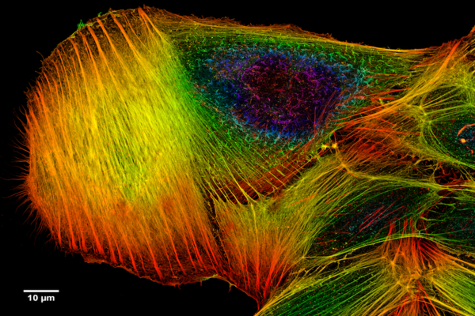
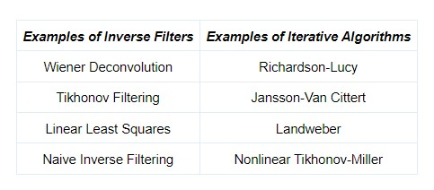

Image Deconvolution: How it works and how to use it for microscopy
An introduction to deconvolution for biologists: what it is, how it works, tools for biologists to do deconvolution, and more resources.
If you’re familiar with microscopy imaging--particularly fluorescent imaging--you may have heard of deconvolution as an image processing technique. But what exactly is deconvolution, and how does it work? In this article, we’ll cover the basics of deconvolution, methods for deconvolution, and where you can find tools to apply deconvolution to your own images.
Contents:
- 1. What is Deconvolution?
- 2. How does Deconvolution work?
- 3. Why do Biologists use Deconvolution?
- 4. How can AI be used for Deconvolution?
- 5. Tools for Biologists to do Deconvolution
- 6. Learn more about Deconvolution
- 7. References
What is Deconvolution?
In a nutshell, deconvolution is a post-processing step that makes images appear “sharper,” or more in focus, and helps you resolve the finer details of your image.
When you collect an image with a microscope, the image you get isn’t a perfect representation of your sample--it’s distorted, or convoluted, which can make the specimen you’re imaging appear blurry or out of focus.
But let’s say you know exactly how your images are being convoluted by your imaging system. Hypothetically, it should be possible to take a final image and “work backwards” to figure out what the original image would have looked like pre-convolution.
This is what deconvolution does--it uses a mathematical algorithm to reverse convolution and generate a sharper image. But where does the “convolution” come from, and how can it be reversed?
How Does Deconvolution Work?
The reason why images become convoluted has to do with the limits of microscopy imaging systems. As light passes from your sample through the optical path of the microscope, it spreads out, or becomes diffracted. This creates blur, which causes the final image to appear less sharp.
Because we understand how our imaging systems work, we can account for blur by modelling light diffraction. This is primarily how deconvolution works--by removing blur. (For this reason deconvolution algorithms are sometimes known as “deblurring” algorithms.)

Deconvolution works by modeling how images are distorted during acquisition, and removing the distortion to estimate what the original sample would have looked like. (Image via Sage 2017)
The Point Spread Function
To model how blur affects an image, we use a point spread function (PSF). The PSF is simply the mathematical formula for how light spreads through a system after it is emitted from a certain point, or light source.
Every imaging system has its own PSF, which can change based on the wavelength of light being collected, the numerical aperture of your objective lens, and the refractive index of your immersion medium.
To achieve deconvolution, you typically need to figure out the point spread function of your system. One option is to estimate your theoretical PSF based on a mathematical model of your system (using tools like a PSF Calculator, or the Diffraction PSF 3D plugin for ImageJ).
.png)
The PSF describes how your image is affected by blur. (Image via Wikimedia Commons)
{kind=link}
The true PSF of your system, however, can be different from the theoretical estimate, so It’s usually recommended that you measure your PSF experimentally. Measuring your empirical PSF involves taking images of small fluorescent beads which act as point sources of light. These images can then be used by your deconvolution software to calculate your PSF.
Importantly, the PSF for most imaging systems isn’t perfectly uniform--it can vary depending on the imaging location, depth, and even over time. Most deconvolution methods assume that the PSF is consistent throughout the image, meaning that large variations in the PSF can interfere with the deconvolution process. As we’ll see later, current research is focused on finding ways to more accurately estimate and account for variations in the PSF.
Algorithms for Deconvolution
There are a multitude of algorithms out there that can be used to achieve deconvolution. Which one you use most often depends on the software: while some programs allow you to choose from a few different methods, others use their own proprietary algorithms.
The first class of algorithms are known as inverse filters, which work by taking an image and using the PSF to back-calculate what the “original,” or deconvoluted, image would have looked like before blurring. These algorithms are the simplest, fastest, and least computationally expensive. However, they are sensitive to noise and can introduce more artefacts into the image.
In addition to inverse filters, there are also iterative algorithms, which work by performing multiple iterations to produce a final deconvoluted image. In a nutshell, these algorithms work by estimating the original image, blurring it using the point spread function, and comparing the blurred estimate to the real image. The estimated image is updated, and the process repeats. Iterative algorithms tend to perform better than inverse filters at deconvolution, but are much slower and more computationally intensive [1,2].
.png)
These images, processed using DeconvolutionLab2, illustrate the difference between a raw image (A) deconvolved using an inverse filter (B) versus two iterative methods (C) and (D). (Image via Sage 2017)
Blind Deconvolution
Blind deconvolution algorithms are unique in that they do not require a known PSF--instead, they estimate the PSF from the input image. Much of the current research in the deconvolution field is focused on developing blind deconvolution algorithms for microscopy, mostly by improving the PSF estimation step.
Blind Deconvolution algorithms have the potential to make deconvolution methods much simpler by removing the requirement of figuring out your PSF. However, blind deconvolution is challenging both in concept and in practice, and for that reason they’re not yet widely available.
Why do Biologists use Deconvolution?
In addition to improving the appearance of fluorescent images, deconvolution can help biologists to distinguish small or subcellular structures by improving image resolution.
Although deconvolution is typically applied to wide field fluorescence microscopy, it also has applications in confocal microscopy, light sheet imaging, and structured illumination microscopy.
In wide field imaging, the objective takes in all the fluorescent light that is emitted from the sample--even the light that is not currently in focus. This leads to more out of focus light in the image, and more blurring. The additional out of focus light can be removed with deconvolution.
Confocal microscopes are designed to capture higher-resolution images than wide field microscopes--they use a pinhole to remove light that is not in focus. However, blur can still affect images captured by confocal microscopes, particularly when imaging thick specimens, and can still be improved by deconvolution methods.
Finally, even though we tend to think of advanced imaging methods like light sheet imaging and structured illumination microscopy to be extremely high resolution already, researchers have developed deconvolution methods for these systems as well [3,4].
How can AI be used for Deconvolution?
The challenges posed by deconvolution--especially to the problem of variable PSFs--has led to the idea to apply deep learning to deconvolution.
Most deep learning-based approaches to deconvolution attempt to use a Convolutional Neural Network to account for aberrations and estimate a more accurate PSF, before applying a more “conventional” deconvolution algorithm [5-8].
However, the biggest opportunity for deep learning in the deconvolution field lies in blind deconvolution and the estimation of point spread functions from already-convoluted images. Since as early as 2010 algorithms have been under development to better estimate PSFs for blind deconvolution [9]. Since then, the research into deep learning-based blind convolution has continued, using Convolutional Neural Networks as well as other methods [10-13]. Even though blind deconvolution is still a challenging problem, this research could lead us to faster, more accurate, and more user friendly methods for deconvolution in the future.
Tools for Biologists to do Deconvolution
If you’re interested in getting started with deconvolution using your own images, you can find a number of options for software, both free and for purchase.
The most popular open-source softwares for deconvolution are ImageJ plugins, particularly DeconvolutionLab2 (which can also be used with Matlab or as a stand-alone program) [1]. This plugin allows you to choose from a variety of algorithms, both linear and iterative.
Additionally, one can use the Iterative Deconvolve plugin, paired with the Diffraction PSF 3D plugin for generating a theoretical PSF.
Many microscope-specific softwares come with deconvolution capabilities as part of their image processing packages, but you can also find deconvolution programs in for-purchase softwares such as Huygens software, AutoQuant , Imaris, and Velocity.
Learn More about Deconvolution
- • Olympus Life Sciences: Introduction to Deconvolution, Image Processing with Deconvolution, Algorithms for Deconvolution Microscopy
- • ImageJ Docs: Deconvolution
- • Photometrics: Image Restoration through Deconvolution
- • Scientific Volume Imaging: Huygens Deconvolution: Restore Microscopy Images, Point Spread Function, PSF Calculator
- • Laser Focus World: A Deconvolution Revolution for Confocal Image Enhancement
- • BiteSize Bio: The Point Spread Function in a Nutshell
If you have more questions, you can reach out to use at nicholas@biodock.ai. Also check out Biodock’s product suite to learn more about our solution to image analysis.
References
- 1. Sage et al. “DeconvolutionLab2: An open-source software for deconvolution microscopy.” Methods. (2017)
- 2. Sarder & Nehorai. “Deconvolution methods for 3-D fluorescence microscopy images.” IEEE Signal Processing Magazine. (2006)
- 3. Chakrova et al. “Deconvolution methods for structured illumination microscopy.” JOSA A. (2016)
- 4. Becker at al. “Deconvolution of light sheet microscopy recordings.” Scientific Reports. (2019)
- 5. Bethalgady & Royer. “Applications, promises, and pitfalls of deep learning for fluorescence image reconstruction.” Nat Methods. (2019)
- 6. Weigert et al. “Isotropic Reconstruction of 3D Fluorescence Microscopy Images Using Convolutional Neural Networks.” MICCAI. (2017)
- 7. Phatak, Abhijeet. “3D Deconvolution with Deep Learning” Stanford Libraries. 2018
- 8. Zhao et al. “A new deep learning method for image deblurring in optical microscopic systems.” J Biophot. (2019)
- 9. Kenig et al. “Blind image deconvolution using machine learning for three-dimensional microscopy.” IEEE. (2010)
- 10. Shajkofci, Liebling. “Semi-Blind Spatially-Variant Deconvolution in Optical Microscopy with Local Point Spread Function Estimation by Use of Convolutional Neural Networks.” IEEE. (2018)